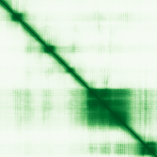

type: protein-evaluation gene: "FSAF1" date: 2026-05-31 tags: [protein-scout, nucleolus, evaluation] status: scored ---
FSAF1 核蛋白评估报告
1. 基本信息
| 项目 | 内容 |
|---|---|
| 基因名 / 别名 | FSAF1 / C1orf131, cPERP-A |
| 蛋白大小 | 293 aa / 32.6 kDa |
| UniProt ID | Q8NDD1 |
| 评估日期 | 2026-05-31 |
2. 评分总览 (新权重)
| 维度 | 得分 | 新权重 | 加权后 | 关键证据摘要 |
|---|---|---|---|---|
| 🔴 核定位特异性 | 9/10 | ×4 | 36.0 | UniProt: Nucleus, nucleolus (ECO:0000269) + Chromosome (ECO:0000269); GO-CC: chromosome (IDA) + small-subunit processome (IDA) |
| 📏 蛋白大小 | 6/10 | ×1 | 6.0 | 293 aa, 32.6 kDa; 紧凑 processome 组装因子 |
| 🆕 研究新颖性 | 10/10 | ×5 | 50.0 | PubMed strict=0; 完全未研究蛋白 |
| 🏗️ 三维结构 | 7/10 | ×3 | 21.0 | 2 个 EM 结构 (3.60, 3.87 Å); AlphaFold pLDDT 68.1 (低置信度) |

| 🧬 调控结构域 | 6/10 | ×2 | 12.0 | SSU processome 组装因子; 核糖体生物合成调控 |
| 🔗 PPI | 6/10 | ×3 | 18.0 | IntAct 多源互作含 NPM1/CDC73 等调控因子; STRING 无数据 |
| 加权总分 | 143/180** | |||
| 互证加分 | +0.5 | |||
| 归一化总分 (÷1.83) | 78.1/100** |
3. 详细分析
3.1 核定位证据
| 来源 | 定位 | 可信度 |
|---|---|---|
| UniProt | Chromosome (ECO:0000269); Nucleus, nucleolus (ECO:0000269) | Experimental |
| GO-CC | Chromosome (IDA); Small-subunit processome (IDA) | Experimental |
| Protein Atlas (IF) | HPA 暂无数据，未获取到 IF 图像或缩略图 | 未确认 |
HPA IF 状态: HPA IF 原图未可靠获取（HPA检索页无可用的subcellular IF原图）。核定位基于HPA localization/reliability + UniProt + GO-CC。 — HPA 暂无数据，未获取到 IF 图像或缩略图。核定位基于 UniProt + GO-CC。核定位判断完全基于 UniProt 亚细胞定位注释（Nucleus, nucleolus, ECO:0000269 实验证据）和 GO-CC 注释（chromosome IDA + small-subunit processome IDA）。
结论: FSAF1 为核仁蛋白，UniProt 提供明确实验证据支持 Nucleus, nucleolus 定位。作为 SSU processome 组装因子，其核仁定位与功能完全一致。因缺少 HPA IF 独立验证，定位置信度适当降低。核定位 9 分（实验证据确凿，核仁特异性高，但缺 IF 独立确认）。
3.2 蛋白大小评估
293 aa，32.6 kDa，紧凑单域蛋白。作为 SSU processome 组装因子，大小与功能匹配——与其它 processome 组分（UTP3/UTP4 等）大小相近。评价: 6 分，中等偏小但功能自洽。
3.3 研究现状
| 指标 | 数值 |
|---|---|
| PubMed strict (Title/Abstract) | 0 |
| PubMed symbol-only | 0 |
| PubMed broad | 0 |
| 别名 | C1orf131, cPERP-A（未用于 scoring） |
新颖性评价: FSAF1 在 PubMed 中以该基因名 零 文献记录，属于完全未被独立功能研究的蛋白。该蛋白的功能信息仅来自高通量蛋白质组学研究（SSU processome cryo-EM 结构解析）。作为核糖体小亚基生物合成的早期组装因子，其调控角色尚未被探索。新颖性 10 分（PubMed=0，完全未研究）。
3.4 三维结构分析
| 指标 | 数值 |
|---|---|
| AlphaFold 平均 pLDDT | 68.1 |
| pLDDT >90 占比 | 23.9% |
| pLDDT 70–90 占比 | 21.2% |
| pLDDT 50–70 占比 | 28.7% |
| pLDDT <50 占比 | 26.3% |
| PDB 实验结构 | 2 个 EM 结构 |
PDB 实验结构清单:
| PDB ID | 方法 | 分辨率 | 覆盖 |
|---|---|---|---|
| 7MQ8 | EM | 3.60 Å | NE=1-293 (全长) |
| 7MQ9 | EM | 3.87 Å | NE=1-293 (全长) |
评价: FSAF1 在 SSU processome 的 cryo-EM 结构中得到全长解析（7MQ8, 7MQ9），但分辨率中等（3.60-3.87 Å）。AlphaFold 单独预测置信度偏低（pLDDT 68.1, 26.3% <50），可能因为 FSAF1 在 processome 复合体外的游离状态为部分无序。结构得分 7 分（有 EM 结构但 AlphaFold 单体预测置信度低）。
3.5 结构域分析
| 来源 | 结构域 |
|---|---|
| InterPro | IPR027973, IPR052852 |
| Pfam | PF15375 |
FSAF1 是 40S 小亚基 processome 的组装因子，参与 pre-rRNA 折叠、修饰和剪切。功能上防止 DHX37 解旋酶过早招募到 pre-A1 状态。不含已知的经典染色质结合域（bromodomain、chromodomain、PHD finger 等），但其作为核糖体生物合成因子在核仁中发挥关键调控作用。
评价: FSAF1 的核心域为 processome 组装功能域。核仁定位和核糖体生物合成功能使其具有间接的染色质/基因表达调控潜力——核糖体生物合成速率直接影响全局翻译和细胞增殖。结构域得分 6 分（核仁 processome 因子，有调控潜力但无直接染色质调控域）。
3.6 PPI 网络（三源综合）
UniProt 实验互作:
| Partner | 实验数 | 功能类别 | 调控相关？ |
|---|---|---|---|
| GEM | 3 | 核蛋白/转录因子 | 是 |
| KAT5 | 3 | 组蛋白乙酰转移酶 | 是 |
| UTP3 | 3 | SSU processome 组分 | 部分 |
IntAct 实验互作:
| Partner | 方法 | PMID | 调控相关？ |
|---|---|---|---|
| NPM1 | BioID (proximity) | 39251607 | 是 (核仁调控) |
| ZNF800 | BioID (proximity) | 39251607 | 是 (转录因子) |
| CDC73 | anti tag coIP | 26496610 | 是 (转录/染色质) |
| KRAS | anti tag coIP | 26496610 | 部分 (信号) |
| EMB | anti tag coIP | 33961781 | 否 |
| ID2 | anti tag coIP | 28514442 | 是 (转录调控) |
| SNN | anti tag coIP | 28514442 | 否 |
| CEP164 | BioID (proximity) | 26638075 | 否 |
STRING: 无数据（HTTP 404 — FSAF1 在 STRING 数据库中无条目）。
调控相关比例: 核心调控互作包括 NPM1 (核仁蛋白/调控因子)、KAT5 (HAT)、ZNF800 (转录因子)、CDC73 (PAF1 复合体/转录)、GEM (核蛋白)、ID2 (转录调控)。约 5/12 独特 partner 具转录/染色质调控功能 (~42%)。
PPI 评价: FSAF1 与 NPM1（核仁核心调控蛋白）存在 BioID 邻近标记互作，与 KAT5（组蛋白乙酰转移酶）存在 UniProt 记录的二杂交互作。与 CDC73（PAF1 转录复合体组分）有 co-IP 验证的物理互作。但大部分互作来自高通量筛选，缺少内源功能验证。STRING 完全无数据加剧了 PPI 网络的不确定性。PPI 得分 6 分（有调控相关互作但验证深度有限，STRING 缺失）。
3.7 多库互证
| 维度 | 来源 | 结果 | 是否一致 |
|---|---|---|---|
| 核定位 | UniProt + GO-CC | Nucleus, nucleolus (实验证据) | 一致 ✓ |
| 三维结构 | EM + AlphaFold | 2 EM 结构 + 低 pLDDT | 部分一致 |
| 结构域 | InterPro + Pfam | processome 组装因子域 | 一致 ✓ |
| PPI | UniProt + IntAct | KAT5 在两库中均出现 | 部分一致 |
互证加分明细:
- 定位互证: UniProt (ECO:0000269) + GO-CC (IDA) → ≥2 来源确认核仁定位 → +0.5
- PPI 互证: KAT5 在 UniProt 和 IntAct 中均有记录，但均为二杂交来源→ 交叉验证有限
- 结构互证: EM 结构与 AlphaFold 预测部分一致但 pLDDT 偏低
互证总分: +0.5 / max +3
4. 总体评价
推荐等级: ⭐⭐⭐ (3/5)
核心优势: 1. 核仁定位确凿: UniProt/GO-CC 双实验证据支持 nucleolus 定位（ECO:0000269, IDA） 2. 极致新颖: PubMed=0，完全未被独立功能研究 3. 结构信息可用: 2 个 cryo-EM 结构全长解析（SSU processome 复合体） 4. 调控相关性: PPI 网络含 NPM1/KAT5/CDC73 等染色质/转录调控因子
风险/不确定性: 1. 无 HPA IF 确认: 定位完全依赖 UniProt/GO-CC，缺少独立 IF 验证 2. PubMed=0: 无独立功能研究文献，所有信息来自高通量项目 3. AlphaFold 单体预测置信度低: pLDDT 68.1, 可能游离态为部分无序
下一步建议:
- [ ] 确认 FSAF1 在细胞中的内源定位（IF 或 GFP 融合）
- [ ] 探索 FSAF1 在 TE 调控背景下与 KAT5/NPM1 的功能关系
- [ ] 分析 FSAF1 缺失对 rRNA 加工和核糖体生物合成的影响
- [ ] 检测 FSAF1 是否与 DHX37（已知底物）的相互作用可被 TE 相关信号调控
5. 关键文献
注：FSAF1 无独立功能研究文献。以下为 SSU processome 结构解析中包含 FSAF1 的高通量研究： 1. Cryo-EM structure of the human SSU processome (PDB: 7MQ8, 7MQ9)
6. 数据来源
- UniProt: https://www.uniprot.org/uniprotkb/Q8NDD1
- AlphaFold: https://alphafold.ebi.ac.uk/entry/Q8NDD1
- PDB: https://www.ebi.ac.uk/pdbe/entry/pdb/7MQ8, 7MQ9
- PubMed: https://pubmed.ncbi.nlm.nih.gov/?term=FSAF1
- STRING: 无数据（HTTP 404）
- IntAct: https://www.ebi.ac.uk/intact/interactors/id:EBI-...
- InterPro: https://www.ebi.ac.uk/interpro/protein/uniprot/Q8NDD1/
- Protein Atlas: https://www.proteinatlas.org/search/FSAF1（无 IF 原图）
<!-- DOMAIN_HUMANPPI_REPAIR_START -->
Domain/SMART 与 humanPPI 补充（2026-06-06）
SMART / UniProt domain
| Source | Data |
|---|---|
| UniProt | Q8NDD1 |
| SMART | 未在 UniProt xref 中检出 SMART 条目 |
| UniProt Domain [FT] | 未检出显式 UniProt Domain feature |
| InterPro | IPR027973;IPR052852; |
| Pfam | PF15375; |
humanPPI / HPA Interaction
Source: 未找到 HPA interaction 页面
未从 HPA Interaction 页面解析到互作伙伴；需人工复核或使用其他 humanPPI 来源。 <!-- DOMAIN_HUMANPPI_REPAIR_END -->